{{ "patient_details" | translate }}
-
 {{ profile?.first_name }} {{ profile?.middle_name }} {{ profile?.last_name }}{{ "mobile_number" | translate }}({{profile?.country_code}}){{ profile?.mobile ? profile?.mobile : "-" }}
{{ profile?.first_name }} {{ profile?.middle_name }} {{ profile?.last_name }}{{ "mobile_number" | translate }}({{profile?.country_code}}){{ profile?.mobile ? profile?.mobile : "-" }} -
{{ "email" | translate }}{{ profile?.email ? profile?.email : "-" }}
-
{{ "address" | translate }}{{ locationData?.address ? locationData?.address : "-" }}
-
{{ "date_of_birth" | translate }}{{ profile?.dob | date : "dd/MM/yyyy" }}
-
{{ "age" | translate }}{{ profile?.dob ? calculateAge(profile.dob) : "-" }} {{"years" | translate}}
-
{{ "gender" | translate }}{{ profile?.gender ? profile?.gender : "-" }}
-
{{ "blood_group" | translate }}{{ profile?.blood_group ? profile.blood_group : "-" }}
-
{{ "iqama_number" | translate }}{{ profile?.iqama_number }}
-
{{ "passport" | translate }}{{ profile?.passport }}
-
{{ "saudi_id" | translate }}{{ profile?.saudi_id }}
-
{{ "marital_status" | translate }}{{ profile?.marital_status ? profile?.marital_status : "-" }}
-
{{ "mrn_number" | translate }}{{ profile?.mrn_number ? profile?.mrn_number : "-" }}
-
{{ "emergency_contact" | translate }}{{ profile?.emergency_contact?.phone_number ? profile?.emergency_contact?.phone_number : "-" }}
{{ "height" | translate }}
{{ "weight" | translate }}
| {{ "date_and_time" | translate }} | {{ element?.endDate | date: 'dd/MM/yyyy | HH:mm'}} | {{ "weight" | translate }} (kg)  | {{ element?.value }} | {{ "manual_result" | translate }} | {{element?.ismanual ? ('yes' | translate) : ('no' | translate) }} |
|---|
{{ "no_record_found" | translate }}
{{ "bmi" | translate }}
{{ "heart_rate" | translate }}
{{ "bp_systolic" | translate }}
{{ "bp_diastolic" | translate }}
{{ "pulse" | translate }}
| {{ "date_and_time" | translate }} | {{ element?.endDate | date: 'dd/MM/yyyy | HH:mm'}} |
{{ "pulse" | translate }} (bpm)

|
{{ element?.value }} | {{ "manual_result" | translate }} | {{element?.ismanual ? ('yes' | translate) : ('no' | translate) }} |
|---|
{{ "no_record_found" | translate }}
{{ "temp(c)" | translate }}
{{ "blood_glucose" | translate }}
{{ "allergy_history" | translate }}
| {{ "date_and_time" | translate }} | {{ element?.createdAt | date: 'dd/MM/yyyy | HH:mm'}} | {{ "allergy_name" | translate }} | {{ element?.allergen }} | {{ "allergy_type" | translate }} | {{ element?.allergyType }} | {{ "reaction" | translate }} | {{ element?.reaction }} | {{ "status" | translate }} | {{ element?.status }} | {{ "date" | translate }} | {{ element?.createdAt | date : "dd/MM/yyyy" }} | {{ "note" | translate }} | {{ element?.note }} | {{ "action" | translate }} |
|---|
{{ "no_record_found" | translate }}
{{ "social_history" | translate }}
| {{ "date_and_time" | translate }} | {{ element?.createdAt | date: "dd/MM/yyyy | HH:mm" }} | {{ "alcohol" | translate }} | {{ element?.alcohol ? "Yes" : "No" }} | {{ "tobacco" | translate }} | {{ element?.tobacco ? "Yes" : "No" }} | {{ "drugs" | translate }} | {{ element?.drugs ? "Yes" : "No" }} | {{ "action" | translate }} |
|---|
{{ "no_allergies_found" | translate }}
{{ "family_history" | translate }}
| {{ "history_name" | translate }} | {{ element?.first_name }} {{ element?.last_name }} | {{ "phone_number" | translate }} | {{ element?.country_code }} {{ element?.mobile_number }} | {{ "gender" | translate }} | {{ element?.gender }} | {{ "Relationship" | translate }} | {{ element?.relationship }} | {{ "date" | translate }} | {{ element?.identified_date | date : "dd/MM/yyyy" }} | {{ "action" | translate }} |
|---|
{{ "no_family_history_found" | translate }}
{{ "family_history" | translate }}
{{ "assessment" | translate }} {{ "date" | translate }} -
{{ assessmentEntry.createdAt | date : "dd/MM/YYYY" }}
{{ "ans" | translate }}. {{ data.answer }}
{{ "no_record_found" | translate }}
| {{ "date_and_time" | translate }} | {{ element?.createdAt | date : "dd/MM/yyy | HH:mm" }} | {{ "appointmentId" | translate }} | {{ element?.appointment_id }} | {{ "subjective" | translate }} | {{ truncateWords(element?.subject, 10) }} | {{ "objective" | translate }} | {{ truncateWords(element?.object, 10) }} | {{ "assessment" | translate }} | {{ truncateWords(element?.assessment, 10) }} | {{ "icdcode" | translate }} | {{ element?.slicedIcdCode }} | {{ "plan" | translate }} | {{ truncateWords(element?.plan, 10) }} | {{ "action" | translate }} |
|---|
{{ "no_diagnosis_found" | translate }}
{{ "date" | translate }}:{{
item?.createdAt | date : "dd/MM/yyyy | HH:mm"
}}
| {{ "order_id" | translate }} | {{ item?.orderId ? item?.orderId : "-" }} | {{ "medicine_name" | translate }} | {{ element?.medicineName ? element?.medicineName : "-" }} | {{ "dose" | translate }} | {{ element?.dose ? element?.dose : "-" }} | {{ "dose_unit" | translate }} | {{ element?.doseUnit ? element?.doseUnit : "-" }} | {{ "route_Of_administration" | translate }} | {{ element?.routeOfAdministration ? element?.routeOfAdministration : "-" }} | {{ "quantity" | translate }} | {{ element?.quantity ? element?.quantity : "0" }} | {{ "frequency" | translate }} | {{ "morning" | translate }} {{ element?.frequency?.morning ? element?.frequency?.morning : "0" }}, {{ "midday" | translate }} {{ element?.frequency?.midday ? element?.frequency?.midday : "0" }}, {{ "evening" | translate }} {{ element?.frequency?.evening ? element?.frequency?.evening : "0" }}, {{ "night" | translate }} {{ element?.frequency?.night ? element?.frequency?.night : "0" }} | {{ "take_for" | translate }} | {{ element?.takeFor?.quantity ? element?.takeFor?.quantity : "0" }} - {{ element?.takeFor?.type ? element?.takeFor?.type : "-" }} |
|---|
{{ "no_record_found" | translate }}
| {{ "prescribed_date" | translate }} | {{ element?.createdAt | date : "dd/MM/yyy | HH:mm" }} | {{ "medicine_name" | translate }} | {{ element?.medicineName ? element?.medicineName : "-" }} | {{ "dose" | translate }} | {{ element?.dose ? element?.dose : "-" }} | {{ "dose_unit" | translate }} | {{ element?.doseUnit ? element?.doseUnit : "-" }} | {{ "route_Of_administration" | translate }} | {{ element?.routeOfAdministration ? element?.routeOfAdministration : "-" }} | {{ "quantity" | translate }} | {{ element?.quantity ? element?.quantity : "0" }} | {{ "frequency" | translate }} | {{ "morning" | translate }} {{ element?.frequency?.morning ? element?.frequency?.morning : "0" }}, {{ "midday" | translate }} {{ element?.frequency?.midday ? element?.frequency?.midday : "0" }}, {{ "evening" | translate }} {{ element?.frequency?.evening ? element?.frequency?.evening : "0" }}, {{ "night" | translate }} {{ element?.frequency?.night ? element?.frequency?.night : "0" }} | {{ "take_for" | translate }} | {{ element?.takeFor?.quantity ? element?.takeFor?.quantity : "0" }} - {{ element?.takeFor?.type ? element?.takeFor?.type : "-" }} |
|---|
{{ "no_medication_available" | translate }}
{{ "prescribed_by" | translate }} : {{ item?.doctorName }}
{{ item?.consultationDate | date: "dd/MM/yyyy" }} | {{ item?.consultationTime }}
| {{ "testname" | translate }} | {{ element?.testName ? element?.testName : "-" }} | {{ "labCenterName" | translate }} | {{ item?.centreName ? item?.centreName : "-" }} | {{ "order_id" | translate }} | {{ item?.appointmentId ? item?.appointmentId : "-" }} | {{ "status" | translate }} | {{ element?.status ? element?.status : "-" }} | {{ "view_result" | translate }} |
|---|
{{ "no_record_found" | translate }}
| {{ "date_and_time" | translate }} | {{ item?.createdAt | date: "dd/MM/yyyy | HH:mm" }} | {{ "testname" | translate }} | {{ element?.labtestName ? element?.labtestName : "-" }} | {{ "labCenterName" | translate }} | {{ element?.labCenterName ? element?.labCenterName : "-" }} | {{ "status" | translate }} | {{ element?.status ? element?.status : "-" }} |
|---|
{{ "test_not_added" | translate }}
{{ "prescribed_by" | translate }} : {{ item?.doctorName }}
{{ item?.consultationDate | date: "dd/MM/yyyy" }} | {{ item?.consultationTime }}
| {{ "testname" | translate }} | {{ element?.testName ? element?.testName : "-" }} | {{ "radioCenterName" | translate }} | {{ item?.centreName ? item?.centreName : "-" }} | {{ "order_id" | translate }} | {{ item?.appointmentId ? item?.appointmentId : "-" }} | {{ "status" | translate }} | {{ element?.status ? element?.status : "-" }} | {{ "view_result" | translate }} |
|---|
{{ "no_record_found" | translate }}
| {{ "date_and_time" | translate }} | {{ item?.createdAt | date : "dd/MM/yyyy | HH:mm" }} | {{ "testname" | translate }} | {{ element?.radiologyTestName ? element?.radiologyTestName : "-" }} | {{ "radioCenterName" | translate }} | {{ element?.radiologyCenterName ? element?.radiologyCenterName : "-" }} | {{ "status" | translate }} | {{ element?.status ? element?.status : "-" }} |
|---|
{{ "test_not_added" | translate }}
| {{ "date_and_time" | translate }} | {{ element?.consultationDate | date: 'dd/MM/YYYY' }} | {{ element?.consultationTime }} | {{ "appointmentId" | translate }} | {{ element.appointmentId }} | {{ "doctor" | translate }} | {{ element?.doctorName ? element?.doctorName : "-" }} | {{ "patient" | translate }} | {{ element?.patientName }} | {{ "status" | translate }} |
{{
element.status === "Cancelled" &&
element.cancel_by === "patient"
? "Cancelled By Patient"
: element.status
}}
|
|---|
{{ "no_past_appointments_found" | translate }}
| {{ "date_and_time" | translate }} | {{ element?.createdAt | date: 'dd/MM/yyyy | HH:mm'}} | {{ "document_name" | translate }} | {{ element?.documentName }} | {{ "issue_date" | translate }} | {{ element?.issueDate ? element?.issueDate :"-" }} | {{ "expiration_date" | translate }} | {{ element?.expiryDate ? element?.expiryDate :"-" }} | {{ "view" | translate }} |
|---|
{{ "no_record_found" | translate }}